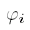
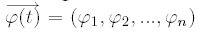
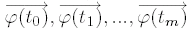

Next: 3.2 Generación automática de Up: 3 Locomoción Previous: 3 Locomoción
Cada articulación se caracteriza por el ángulo  ![[*]](crossref.png) se muestra este vector,
en un instante dado, para un robot ápodo de 6 articulaciones.
se muestra este vector,
en un instante dado, para un robot ápodo de 6 articulaciones.
Para cada instante, existe un vectores de posición angular que determina
la forma del gusano:

En robots como Polybot, estas tablas están precalculadas, y se descargan en los módulos, consiguiéndose diferentes formas de locomoción (gaits). Es imposible tener calculadas o almacenadas todas las posibles tablas para todos los movimientos. En Cube Revolutions, se generan de forma automática.
Juan Gonzalez 2004-10-05